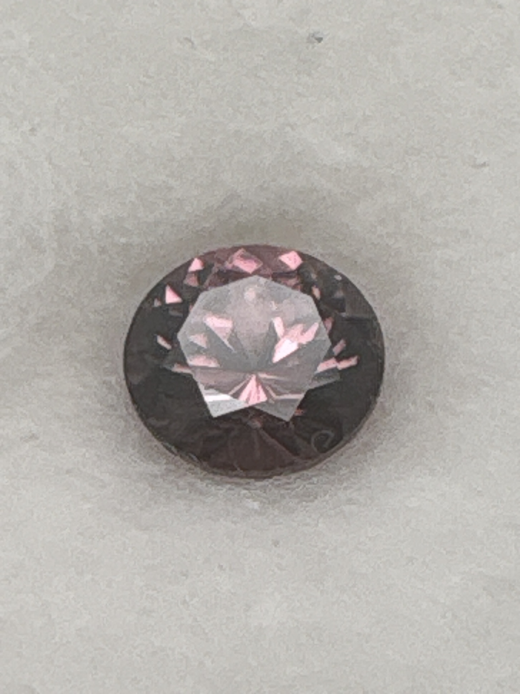

The Gem Drawer › No. 85

A 6.5 mm round that reads darker than “pink” suggests — closer to maroon.
| Catalogue no. | #85 |
|---|---|
| As labeled | Pink Zircon |
| Shape / cut | Round |
| Weight | 1.55 ct |
| Measurements | 6.5mm round |
| Colour | Dark pinkish-maroon (reads darker than typical "pink" in photos - see notes) |
| Clarity / condition | Not recorded |
Interested in this stone, or in the collection as a whole? Terry VanWormer can answer questions about it.
Click here to inquireor email Terry directly at maxrebo34@gmail.com